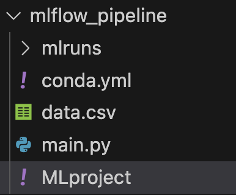
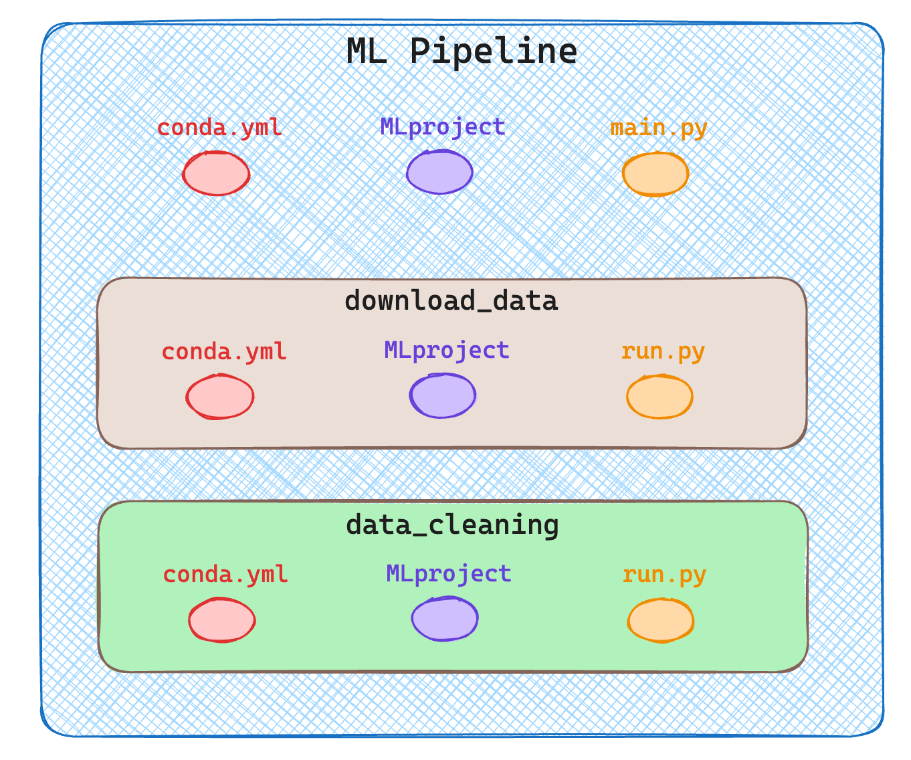
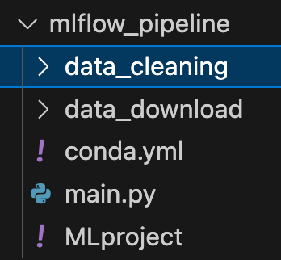
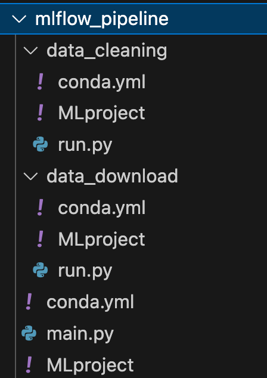
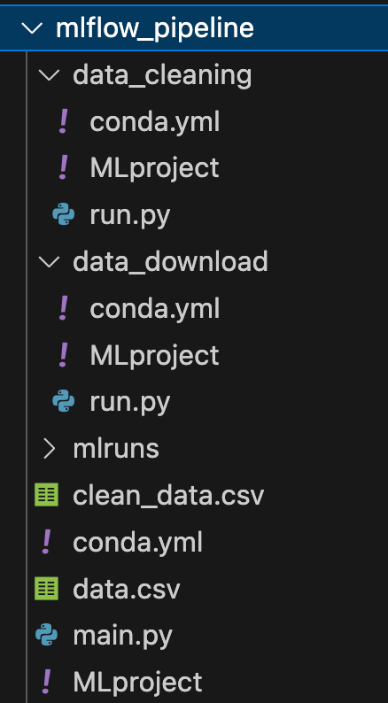

MLOps — A Gentle Introduction to MLflow Pipelines
Orchestrate your end-to-end machine learning lifecycle with MLflow.
December 26, 2024 · MLOps, MLFlow
Introduction
Various statistics say that 𝗯𝗲𝘁𝘄𝗲𝗲𝗻 𝟱𝟬% 𝗮𝗻𝗱 𝟵𝟬% 𝗼𝗳 𝘁𝗵𝗲 𝗺𝗼𝗱𝗲𝗹𝘀 𝗱𝗲𝘃𝗲𝗹𝗼𝗽𝗲𝗱 𝗱𝗼 𝗻𝗼𝘁 𝗺𝗮𝗸𝗲 𝗶𝘁 𝘁𝗼 𝗽𝗿𝗼𝗱𝘂𝗰𝘁𝗶𝗼𝗻. This is often due to a failure to structure the work. Often the skills acquired in academia (or on Kaggle) are not sufficient to be able to put on a machine learning-based system that will be used by thousands of people.
One of the most in-demand skills when looking for Machine Learning jobs in industry is the ability to use tools that enable the orchestration of complex pipelines such as MLflow.
In this article, we will see how to structure a project into various steps and manage all the steps in a structured way.
I run the scripts of this article using Deepnote: a cloud-based notebook that’s great for collaborative data science projects and prototyping.
What is Mlflow?
MLflow is an open-source platform for end-to-end lifecycle management of Machine Learning developed by Databricks.
MLflow offers a variety of features, such as monitoring models in training, using an artefact store, serving models, and more. Today we will look at how to use MLflow as an orchestrator of a Machine Learning pipeline. This is because especially in the world of AI where there are various steps and experimentation it is critical to have clean, understandable and easily reproducible code.
But what exactly are these steps that we need to manage with MLflow? This depends on the context of our work. A Machine Learning pipeline can change depending on where we are working and what the end goal is. For example, a pipeline for solving a Kaggle task is straightforward, since most of the time is spent in modeling. While in industry we have several steps for instance for checks of data and code quality.
For simplicity here we assume a very basic pipeline.
We want them to develop each of these steps as independently as possible. Those who are in charge of modelling, develop only that component not caring about data collection, data download, cleaning etc.
Let us further assume (exaggerating) that we have a team for each pipeline component. We want to facilitate the work of each team by allowing them to work with the tools and languages they know best. So we would like independent development environments in each step. For example, data downloading can be developed in C++ , data cleaning in Julia, modelling in Python, and inference in Java. With MLflow it is possible!
To install used MLflow you can use pip.
Install Mlflow
Define an MLflow project
An MLflow project consists of 3 main parts, which are:
- Code: The code we write to solve the task we are working on
- Environment
:
We need to define the environment. What dependencies does my code need to run?
- MLflow Project definition: each MLflow project has a file called MLproject that defines what is to be run when, and how the user has to interact with the project.
The code for each pipeline component I will write in this article will be in Python for simplicity. But as mentioned earlier remember that this is not a must.
How do we manage the environments? To define a reproducible and isolated development environment we can use various tools. The main ones are docker and conda. In this example, I will use conda, because it allows me to specify dependencies quickly and easily, while docker has a somewhat more difficult learning curve. If you need to download conda, I recommend the lighter version called miniconda.
We can create a conda.yml file to define our development environment and later create a virtual environment.
What we can do is define the use of pip in our conda.yml and then use pip for further installations, as in the case of wandb below. (p.s In this case we don't even need wandb)
#conda.yml
name: download_data
channels:
- conda-forge
- defaults
dependencies:
- requests
- pip
- mlflow
- hydra-core
- pip:
- wandbNow in order to create the environment defined in the conda.yml we can run the following command in the cli.
conda env create --file=conda.yamlLet’s activate it.
conda activate download_dataWe now need to define an MLproject file. Pay attention to this file, even though it is written as a yaml, it does not need extensions.
In this file, we first define the name of the step, and the conda environment to be used. After that we have to specify what is the entry point, that is, the main python file from which to start the computation. After that, we define also the parameters we need to launch the file. For example in the download phase, I expect the user to pass a URL from where to download the data.
As a final point, the command that mlflow should effectively launch.
name: download_data
conda_env: conda.yml
entry_points:
main:
parameters:
data_url:
description: URL of the data to download
type: uri
command: >-
python main.py --data_url {data_url} #in the brackets insert the input variableWe are finally ready to write the main Python code main.py
In Python code, we have to accept as input the argument expected from the MLproject, the “data_url”. We can then use argparser so that the user can pass this argument from the cli.
Then we execute the run() function, which does nothing more than read the CSV file from the URL and save it locally, thus doing a simple download of the data, as expected from this component.
We use open-source (MIT license) data. Specifically, the classic Titanic Dataset that you can find on GitHub at this URL: https://raw.githubusercontent.com/datasciencedojo/datasets/master/titanic.csv
This is how you write the main.py file.
We can run our entire component using mlflow. In mlflow to specify a parameter we use the -P flag.
mlflow run . -P data_url="https://raw.githubusercontent.com/datasciencedojo/datasets/master/titanic.csv"You will see from the terminal logs, that first Mlflow will try to recreate the development environment using conda.yml (it will take a while the first time) and then it will launch the code. Eventually, you should see your dataset downloaded!

From Component to Pipipeline
Perfect, now we have the basis for creating a project with MLflow made of one component. But how do we develop an entire pipeline?
In MLflow a pipeline is nothing more than an MLflow project composed of other MLflow projects!

Since I want to create a pipeline with multiple components in my root directory I will have two subdirectories one for each component as you can see in the next image.

For simplicity, I run only two steps, data download and data cleaning. Obviously, a real pipeline consists of much more, training, inference etc.
As shown in the diagram above each component/step is itself an MLflow project described by 3 files. See the complete structure in the following image.

Let’s look now at how I defined all the files in this directory.
🟢 mlflow_pipeline/conda.yml
This file is no different from before, it defines the development environment.
#conda.yaml
name:mlflow_pipeline
channels:
- conda-forge
- defaults
dependencies:
- pandas
- mlflow
-requests
- pip
- mlflow🟢 mlflow_pipeline/MLproject
I am probably not always interested in launching all the steps in my pipeline, but at times I only want some of them. So I accept as input a string that defines all the steps I want to launch separated by a comma.
So when MLflow is launched, the command will be something like:
mlflow run . P steps=”download,cleaning,training”
name: mlflow_pipeline
conda_env: conda.yml
entry_points:
main:
parameters:
steps:
description: steps you want to perform seprarated by comma
type: str
data_url:
descripton: url of data
type: uri
command: >-
python main.py --steps {steps} --data_url {data_url}🟢 mlflow_pipeline/main.py
In this file, we are now going to handle the steps. So once we take the input into the parser, we split the string by the comma and we have all the steps in an array.
For each step, we run a mlflow.run, this time directly from Python without using cli. The command is very similar though, for each run we specify the path to the component, and the entry point (always main) and if needed we pass parameters.
mlflow_pipeline/main.py
From here on, defining the other components is very similar to what we’ve done before. Let’s continue to describe the download and cleaning steps.
⚠️ All the conda.yml are the same, so I will avoid repeating them multiple times.
🟢 mlflow_pipeline/data_download/MLproject
As before the data_download expects an input parameter, the URLto download the data, the rest is standard.
name: download_data
conda_env: conda.yml
entry_points:
main:
parameters:
data_url:
description: url of data to download
type: str
command: >-
python run.py --data_url {data_url}🟢 mlflow_pipeline/data_download/run.py
In run.py we take the URL file, as defined in the MLproject, and use it to open a pandas dataframe and save the dataset locally with a .csv extension
mlflow_pipeline/data_download/run.py
🟢 mlflow_pipeline/data_cleaning/MLproject
In this case, the data cleaning is very simple. I am interested in focusing on how to structure the pipeline, not on creating complex steps. We do not expect any input parameters, so we only need to run run.py
name: data_cleaning
conda_env: conda.yml
entry_points:
main:
command: >-
python run.py🟢 mlflow_pipeline/data_cleaning/run.py
In the actual cleaning, we delete all rows that contain null values and save the new dataframe as CSV in the local root folder.
mlflow_pipeline/data_cleaning/run.py
Now if we haven’t made any mistakes we can run our entire pipeline with a single mlflow command specifying the appropriate parameters, then the steps and the URL to the dataset.
mlflow run . -P steps="data_download,data_cleaning" -P data_url="https://raw.githubusercontent.com/datasciencedojo/datasets/master/titanic.csv"You will see that all steps will be performed correctly, and you will find two new CSV files in your directory! 🚀

Conclusion
In this article, we saw what a project is composed of in MLflow, and how a pipeline is defined by a sequence of projects.
Each step in the pipeline can be developed independently because it is defined by its own environment. We can use different languages and tools for the development of each step, and MLflow works only as an orchestrator. I hope this article has given you an idea of how to use MLflow.
Although MLFlow is very useful for tracking machine learning experiments, its complexity and steep learning curve may discourage smaller projects or teams new to MLOps. It is, however, very convenient to use when experiment tracking, data and model versioning, and collaboration are critical, making it ideal for medium- to large-scale projects.
The features it offers are many more, for example, you can use it to monitor the performance of a model or to save the artefacts you create.
In future articles, I will show you how to integrate additional tools within MLflow to use it to its full potential!
If you are interested in this article follow me on Medium! 😁
💼 Linkedin ️| 🐦 Twitter | 💻 Website
This article was published on Towards Data Science